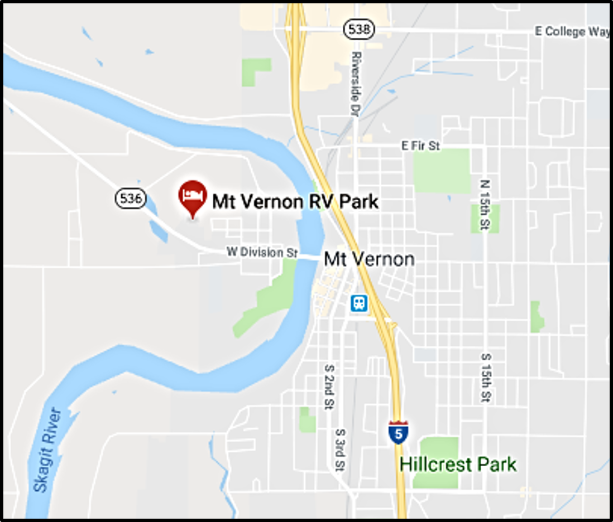

Mount Vernon RV Park is located just a half mile from downtown Mount Vernon and the Skagit River. It’s nearby and easily accessible from both I-5 North and South. A few miles from the interstate exits, the park sits nestled between Willow and Poplar trees creating an environment of convenience and privacy.
